|
|
Ein Hoffnungsschimmer für Aceh
Wiederaufbau
in der Bürgerkriegsregion
|
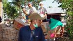Aceh wurde von der Flutwelle, die am 26. Dezember 2004 weite
Teile Südasiens zerstörte, besonders stark verwüstet.
Anders als in
Indien oder Thailand,
wo die Hilfsmaßnahmen
schnell greifen
konnten, gestaltete
sich die Hilfe
in Aceh auf Grund
der dortigen
Situation nicht einfach: Seit vielen Jahrzehnten führen
die »Bewegung Freies Aceh« (GAM), die
eine Unabhängigkeit Acehs von Indonesien fordert, und das
indonesische
Militär einen blutigen Bürgerkrieg. Im
Jahr 2003 sperrte
die indonesische
Regierung die
Region für
alle Ausländer. Auch die Mitarbeiter von Hilfsorganisationen
durften nicht
mehr einreisen.
Trotz dieser
ungünstigen Bedingungen
war terre des
hommes über ein Netzwerk von Partnerorganisationen
weiterhin in
Aceh tätig. Ein Straßenkinderprojekt
wurde gefördert, ebenso studentische und private Organisationen,
die sich für die Menschenrechte einsetzen.
Soforthilfe für die Flutopfer
Walter Skrobanek, terre des hommes-Koordinator
der Projekte in Südostasien, traf kurze
Zeit nach der Katastrophe in Aceh ein. »Es
war ein großer Schock. Über Banda
Aceh hing ein Geruch von Verwesung. Die Menschen
trugen Geruchsmasken, es herrschte eine gespenstische
Atmosphäre. Die Flutwelle hatte ganze Stadtviertel
dem Erdboden gleichgemacht.« Mit Hilfe
zweier langjähriger Partnerorganisationen
konnte Walter Skrobanek die Soforthilfe rasch
in die Wege leiten. Sie kümmerten sich darum,
dass Hilfsgüter per LKW aus Medan nach Aceh
transportiert und von Freiwilligen verteilt wurden. »Die
Zerstörungen sind so unvorstellbar groß,
dass wir die Hilfsgütertransporte für
die nächsten zwei bis drei Monaten beibehalten
werden. Insbesondere wollen wir die Menschen
erreichen, die außerhalb der großen
Notlager geblieben sind.« Innerhalb der
Lager, so Skrobanek, sei die Versorgung der Menschen
durch indonesische Institutionen und internationale
Hilfsorganisationen gesichert.
Wiederaufbau von Dörfern
Neben den Soforthilfemaßnahmen wird terre
des hommes den langfristigen Wiederaufbau der
ländlichen Gemeinden unterstützen.
Um dabei die Bedürfnisse der betroffenen
Menschen zu berücksichtigen, beteiligen
sich die Partner an der Planung, terre des hommes
konzentriert sich auf die zerstörten Fischerdörfer.
Die Gemeinden sollen so schnell wie möglich
wieder aufgebaut werden, damit die Menschen die
Notlager verlassen können. »Wenn viele
Menschen mit der gleichen traumatischen Erfahrung über
längere Zeit auf engem Raum zusammenleben«,
erklärt Walter Skrobanek, »ohne sinnvolle
Beschäftigung und von externer Hilfe abhängig,
kann das für die Psyche fatale Folgen haben.
Den Menschen nützt es in dieser Situation
mehr, wenn sie aktiv am Aufbau ihrer Gemeinde
mitwirken können.«
Rund 100 Fischerdörfer sollen wieder
aufgebaut werden und etwa 10.000 Acehnesen ein
neues Zuhause bieten. Sie erhalten Baumaterial
für neue Hütten, provisorische Schulen
und Fischerboote sowie neue Netze. Solange die
Menschen noch nicht ausreichend Fische fangen
oder ihre Felder bewirtschaften können,
sollen auch die Lebensmittellieferungen weitergehen.
Um die medizinische Versorgung kümmern sich
die terre des hommes-Partner, bis das staatliche
Gesundheitssystem die Dörfer wieder erreicht. Ausbildung für lokale Helfer
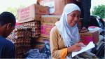Teil des Wiederaufbauprogramms ist die Ausbildung
der Mitarbeiter der lokalen Partnerorganisationen. »Viele
erfahrene Mitarbeiter«, so Walter Skrobanek, »sind
bei der Katastrophe umgekommen. Das ist sehr
erschütternd und hat zur Folge, das es an
Wissen mangelt, wie Hilfsprojekte praktisch umgesetzt
werden.« Zudem werden alle Helfer das Verhalten
in Katastrophen trainieren, aber auch in Menschenrechtsfragen
und Friedensarbeit geschult. Gerade diese Kurse
seien in Aceh von besonderer Bedeutung, da sie
den Aufbau demokratischer Strukturen unterstützten,
so Walter Skrobanek. »Damit setzen wir
uns aktiv für die Entwicklung einer friedlichen
und gerechten Gesellschaft in Aceh ein. Voraussetzung
ist jedoch, dass Aceh nicht wieder unter die
Kontorolle des Militärs gerät, die
Flutopfer nicht für Jahre in Massenlager
gesperrt werden und Hilfsorganisationen auch
künftig frei arbeiten können.«
Einen Hoffnungsschimmer gibt es bereits: Beide
Kriegsparteien haben Verhandlungen über
einen Waffenstillstand aufgenommen.
Aus: terre
des hommes Zeitung März 2005,
Text:
Athanasios Melissis terre des hommes unterstützt den Wiederaufbau
in Aeeh über einen Zeitraum von drei bis
fünf Jahren drei bis fünf Jahren mit
insgesamt 3,7 Millionen Euro. Davon sind eine
Million Euro für Hilfslieferungen innerhalb
der Soforthilfe vorgesehen, über zwei Millionen
Euro werden für den Wiederaufbau der Gemeinden
verwendet. Mit etwa 200.000 Euro wird das Ausbildungsprogramm
gefördert.
Hintergrundinfos: terre
des hommes-Hilfsmaßnahmen
in Indonesien
(Aceh) in chronologischer
Reihenfolge |
|
Sorgfalt statt Aktionismus
Die Hilfe nach
dem Tsunami braucht einen langen
Atem
|
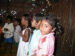Ganz langsam lässt das Medieninteresse nach: Die ersten
Fernsehkameras sind eingepackt, Journalisten kehren heim in ihre
Redaktionen oder wenden sich anderen Krisenherden zu. Wochenlang
hatten sich die Bilder und Nachrichten förmlich überschlagen,
nachdem am 26. Dezember 2004 eine verheerende Flutwelle die Küsten
Südasiens verwüstet und fast 300.000 Menschen in den
Tod gerissen hatte.
Angeregt durch die intensive Berichterstattung,
folgte auf die Naturkatastrophe eine nie dagewesene
Welle der Hilfsbereitschaft. Allein in Deutschland
wurden mehr als 500 Millionen Euro gesammelt,
die Bundesregierung sagte weitere 500 Millionen
zu. Nachdem die Menschen zunächst mit dem
Notwendigsten versorgt werden mussten, um zu überleben,
stellt sich nun die Frage nach dem langfristigen
Wiederaufbau.
Das Kinderhilfswerk terre des hommes begann unmittelbar
nach der Katastrophe, die Hilfe für die
Opfer zu organisieren. Schwerpunkte dieses Einsatzes
sind die Küste des indischen Bundesstaates
Tamil Nadu sowie die indonesische Provinz Aceh,
wo die Zerstörungen am gewaltigsten und
die Zahl der Opfer am höchsten ist. Auch
an der Küste Thailands wird Hilfe für
Tsunami-Opfer geleistet.
»terre des hommes ist keine Organisation
der klassischen Katastrophenhilfe«, erklärt
Michael Bünte, der die Soforthilfe bei terre
des hommes koordiniert. »Vielmehr werden
wir dann aktiv, wenn wir in der Katastrophenregion über
eine funktionierende Partnerstruktur verfügen,
mit der wir in der Soforthilfe zusammenarbeiten
können.« Nur mit erfahrenen einheimischen
Partnern sei es möglich, die Arbeit sinnvoll
zu koordinieren und tatsächlich die Bedürftigen
zu erreichen.
weiterlesen auf www.tdh.de |
|
Einladung zur Vernissage "Reinblau" (Stefan
Leopold Sztatecsny)
18. März um 18
Uhr, Helmut-Dahringer-Haus,
Gaggenau
|
|
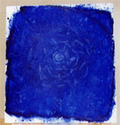 |
| "Ozean mit der Botschaft des Lebens" (Ölfarbe, Fett und Pigment auf Leinwand, Größe 70x80cm) |
|
|
|
| Organische Form (Ölfarbe auf Leinenpapier, Größe 40x50cm) |
|
 |
| Badische Landschaft (Mischtechnik auf Leinwand, Größe 50x40cm) |
|
Bilder - Objekte - LandArt Zur Eröffnung der Ausstellung "Reinblau" laden wir Sie und Ihre
Freunde herzlich
ein.
Begrüssung: Manfred Lang, Heimleiter
Einführung: Heiner Nagel, Gaggenau
Musikalische Umrahmung: Clara Sztatecsny, Kuppenheim (Aus: Die
fabelhafte Welt
der Amelie)
Die Ausstellung kann bis 30. April 2005 täglich von 8- 20 Uhr
im Foyer des
Helmut-Dahringer-Hauses
besichtigt werden.
Stefan Leopold Sztatecsny
- Geb. 1965 in Wien
- 1994 - 1997 Bauhaus Dessau
- Seit 1997 Tätigkeit als Freier Garten- und Landschaftsarchitekt
- Bildende Kunst seit ca. 1980
- Seit 2000 LandArt-Projekte in Korcula / Kroatien
- lebt und arbeitet in Kuppenheim
Ausstellungen:
- Universität für Bodenkultur, Wien (Beteiligung)
- Stadtbibliothek Prenzlauer Berg, Berlin
- Casa - Kunst und Kultur im Prenzlauer Berg, Berlin
- Bauhaus-Club, Dessau
- Galerie Privatwirtschaft, Berlin-Prenzlauer Berg
Kontakt / Atelier:
Luisenstraße 6, 76456 Kuppenheim, Tel: (07222) 949445, E-Mail
|
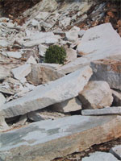 |
| Dalmatinischer Triptychon - Teil 1‚ Rollerkugel / Granatapfelzweige / Größe ca. 50 cm / 1994 bei Racisce, Korcula – Kroatien |
|
|
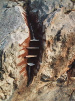 |
| Dalmatinischer Triptychon – Teil 2, Wunde / Installation mit Lehmfarbe, Kalksteinplatten und Steinstaub auf Felsen / Größe ca. 5 x 1 m / 1994 bei Racisce, Korcula – Kroatien |
|
|
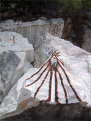 |
| Dalmatinischer Triptychon – Teil 3‚ Zeichen / Installation mit Fisch, Früchten, Lehmfarbe auf Kalksteinblöcken / Größe ca. 8 x 8 m / 1994 bei Racisce, Korcula – Kroatien |
|
|
|
10 Jahre Weltsozialgipfel in Kopenhagen
Beseitigung der
Armut muß Vorrang haben
|
Aus Anlass des zehnten Jahrestages des Weltsozialgipfels in Kopenhagen
haben deutsche Nichtregierungsorganisationen in Berlin einen
Forderungskatalog an die aEntwicklungshilfeministerin Heidemarie
Wieczorek-Zeul übergeben. Darin fordern sie verstärkte
Anstrengungen, um weltweit und in Deutschland Armut und soziale
Ausgrenzung zu beseitigen. "Auch nach zehn Jahren ist keine
einzige der zehn Verpflichtungen des Weltgipfels für soziale
Entwicklung eingelöst worden", kritisiert Klaus Heidel,
Sprecher des Netzwerkes Social Watch Deutschland/Forum Weltsozialgipfel. "Nicht
einmal die für das Jahr 2000 vorgesehenen Teilziele sind
bisher erreicht worden."
"Die Bilanz ist aus entwicklungspolitischer
Sicht niederschmetternd", so Peter Mucke,
Geschäftsführender Vorstand des entwicklungspolitischen
Kinderhilfswerkes terre des hommes. "Zwar
gab es in einigen Bereichen leichte Fortschritte.
Aber noch immer sterben 174 von 1.000 Kindern
in Afrika südlich der Sahara, bevor sie
das fünfte Lebensjahr erreichen. Noch immer
ist ein Drittel der Menschen in Afrika südlich
der Sahara unterernährt. In diesen Ländern
ist die Zahl der Armen in den letzten zehn Jahren
nicht gesunken, sondern weiter gestiegen. Weltweit
leben immer noch mehr als 2,7 Milliarden Menschen
in Armut – und damit fast jeder zweite
Mensch auf der Erde."
Angesichts dieser Bilanz verlangt Mucke eine radikale Änderung
der Politik: "Die Regierungen - und damit
auch die Bundesregierung - haben im Jahr 2005
die wohl letzte Chance, die notwendigen politischen
Entscheidungen zu fällen, um die Millenniumsziele
bis zum Jahr 2005 noch zu erreichen." In
den letzten zehn Jahren hätten die Regierungen
zu wenig getan, um ihre Verpflichtungen zu erfüllen.
Auch in Deutschland hat Armut zu- und nicht abgenommen. "Der
zweite Armuts- und Reichtumsbericht der Bundesregierung
belegt, dass in den vergangenen vier Jahren die
Armutsrisikoquote in Deutschland von 12,1 Prozent
auf 13,5 Prozent weiter gestiegen ist",
erklärte Jürgen Gohde, Präsident
des Diakonischen Werkes. Die Beseitigung der
Armut müsse Vorrang bei politischen Entscheidungen haben,
so die Forderung von Social Watch Deutschland/Forum Weltsozialgipfel.
Dieses Bündnis ist ein Zusammenschluss von 27 entwicklungs-
und sozialpolitischen Organisationen und
Institutionen,
politischen Stiftungen und Gewerkschaften.
Kontakt und weitere Informationen:
Klaus Heidel,
Sprecher Social Watch
Deutschland/Forum
Weltsozialgipfel, Tel.: 06221/433 36 13, Fax: 06221/433 36 29,
eMail: klaus.heidel@woek.de
www.woek.de
www.forum-weltsozialgipfel.de
|
|
Dauerhafter Einsatz ist angesagt
|
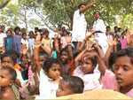Auch ohne akute Katastrophen: Jugendliche können rund um
den Erdball helfen und ihre Solidarität zeigen. In Krisengebieten
sind jedoch vor allem Experten gefragt.
Was haben Ein-Euro-Jobber
und Jugendliche gemeinsam? Beide werden nicht
in Krisengebieten eingesetzt.
Und das aus gutem Grund, denn
Katastrophenhilfe will gelernt sein. Darin sind
sich alle großen Organisationen wie das Deutsche
Rote Kreuz (DRK) oder das Technische Hilfswerk(THW) einig.
„Das fängt beim Impfen an und hört
bei den erforderlichen Qualifikationen noch längst
nicht auf", sagt Nicolas Hefner von der THW-Zentralein
Bonn. Theoretisch wäre zwar ein Einsatz beim
Technischen Hilfswerk in Südostasien ab 18 Jahren
möglich. Aktuell sind jedoch nur neun Helfer
der Jahrgänge 1980-84 vor Ort und unterstützen
den Wiederaufbau in Thailand, Sri Lanka oder Indonesien.
„Für unsere Hilfsaktionen wie zum Beispiel
im Bereich der Trinkwasseraufbereitung, Brunnenreinigung
oder der Instandsetzung von Infrastruktur greifen
wir auf erfahrene und für solche Einsätze
ausgebildete Kräfte zurück", bestätigt
Hefner. Neben guten Englischkenntnissen müssen
die Helfer eine sechsmonatige Grundausbildung, regelmäßige
Standorttrainings sowie einen einwöchigen Lehrgang über
die Einsatzgrundlagen im Ausland vorweisen. Am besten
haben sie auch schon einige Erfahrungen durch konkrete
Sozialarbeit in anderen Ländern gesammelt.
Deshalb bietet zum Beispiel das Deutsche Rote Kreuz
für Jugendliche ab 18 Jahren mit einem Schulabschluss
ein freiwilliges soziales Jahr im Ausland an. Eine
erfolgreich absolvierte Ausbildung, am besten in
einem technischen oder medizinischen Beruf, verbessert
ebenfalls die Chancen. Ansonsten sind Delegierte
der Hilfsorganisationen im Auslandsdienst in der
Regel über 25 Jahre, sprechen mindestens eine
Fremdsprache fließend, haben einen Führerschein
und kennen sich in ihrem Beruf besonders gut aus.
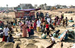Und bevor es wirklich ernst wird, ist ein 10-tägiger
Kurs inklusive Sicherheitstraining mit der Bundeswehr
fällig. Denn oft finden die Hilfsaktionen in
Gebieten statt, in denen scharf geschossen wird.
Etwa wie jetzt in Sri Lanka oder Aceh in Indonesien,
wo sich Regierungstruppen und Aufständische
bekriegen. Jährlich durchlaufen zwischen 25
und 50 neue Leute beim DRK diesen Auswahl- und Ausbildungsprozess,
bevor sie ehrenamtlich für die Organisation
im Ausland arbeiten.
Bei anderen Hilfsorganisationen engagieren sich Jugendliche
vor allem in der Heimat. So können beim Kinderhilfswerk
terre des hommes Schülerinnen und Schülerin
der„Aktion Schülersolidarität" durch
das Sammeln von Spenden Projekte in Südindien
und Aceh unterstützen. Von dem Geld werden im
südindischen Bundesstaat Kerala neue Boote und
Netzefür200 Fischerfamilien angeschafft und
die Schule in einem Dorf wiederaufgebaut.
Die Aktivitäten für diese Projekte laufen
an den Schulen seit den Weihnachtsferien auf Hochtouren.
Eine Grundschule in Osnabrück fertigte zum Beispiel
Scoubidoo-Bänder an und nahm hierfür zusammen
mit Spenden 432 Euro ei n. Eine Montessori-Schule
hat Brot und Kuchen gebacken, Pakete versteigert,
Bilder gemalt und konnte bisher 818 Euro überweisen.
Solche Beispiele gibt es noch viele. „Insgesamt
sind dadurch bis jetzt über sieben Millionen
Euro zusammengekommen", berichtet Hans-Martin
Große-Oetringhaus von terre des hommes in Osnabrück.
Weitere Ideen für Aktionen und Unterrichtsprojekte
sowie Materialien für die „Aktion Schülersolidarität" sind
unter dem Stichwort „Globales Lernen" auf
der Website der Organisation zu finden (www.tdh.de).
Entwicklungshilfe vor Ort
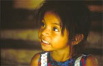Wer für den Katastropheneinsatz bei den Hilfsorganisationen
noch nicht alt genug ist und wem das Geldsammeln
zu Hause nicht reicht, braucht die Hände trotzdem
nicht in den Schoß zu legen. Denn es gibt noch
viele Chancen, die Ärmel hochzukrempeln und
im Ausland konkrete Entwicklungshilfe zu leisten.
Jugendliche ab 18 Jahre können sich beim Internationalen
Bauorden in Worms (www.bauorden.de) melden. Einzige
Voraussetzungen: Englischkenntnisse und die Bereitschaft,
acht Stunden täglich hart zu arbeiten.
Bei dieser Organisation besteht unter anderem die
Möglichkeit, in ehemaligen Kriegsgebieten wie
Armenien oder Bosnien-Herzegowina drei Wochen lang
beschädigte Gebäude abzureißen, Häuser
wieder aufzubauen oder zu renovieren. Helfer werden
in Workcamps untergebracht. Unterkunft und Verpflegung
sind frei, die Reisekosten übernimmt der Orden.
Allerdings ist bei Auslandseinsätzen eine Anmeldegebühr
von 80 Euro fällig.
Bei Eirene (www.eirene.org), einem christlichen Friedensdienst,
können sich Jugendliche ab 18 Jahren ebenfalls
engagieren. Und zwar derzeit i n erster Linie im
so genannten „Nordprogramm", etwa in Projekten
für Obdachlose und Flüchtlinge in den USA,
in der Versöhnungsarbeit in Nordirland oder
bei der Betreuung von Straßenkindern in Rumänien.
Fremdsprachenkenntnisse in Englisch oder Französisch
sind ebenso gefordert wie die Bereitschaft, für
die Zeit des Auslandsaufenthaltes in einfachen Verhältnissen
zu leben. Jeder Freiwillige muss zudem noch einen
eigenen Unterstützerkreis gründen, um den
Eigenanteil von 200 Euro monatlich zu bestreiten.
Gefragt als Spender sind hier die ehemalige Schule,
die örtlichen Sparkassen und Firmen, Kirchengemeinden
und Vereine, aber auch Verwandte und Freunde.
Quelle: „
Punkto !“ - Das Jugendmagazin
der Sparkassen-Finanzgruppe,
Sonderheft zur
Flutkatastrophe
in Asien, 2005
Text: Susan Tuche |
|
Agentur exakt: Erlebnis Soziale
Verantwortung Aktionen 2005
|
Seit Jahren sind wir verschiedenen Einrichtungen und
Organisationen
besonders verbunden. Entscheidend für unser Engagement, sowohl finanziell als
auch durch Sachleistungen, ist unsere Überzeugung,
mit unseren Mitteln anderen helfen zu können.
Wir unterstützen auch in diesem Jahr unter anderem
die Erlacher Höhe, eine diakonische Einrichtung
für wohnungs- und arbeitslose Menschen.
Mitdenkend. Mitfühlend. Mitwirkend.
2005 haben wir zudem eine Spendenaktion zu Gunsten
von Terre des Hommes, Regionalgruppe Murgtal, initiiert:
Für jeden Kunden, der uns 2005 in der Agentur
besucht, zahlen wir 1 Euro in die Spendenbox. Übergabe:
am Jahresende.
Mit Briefen und kleinen Geschenken halten wir außerdem
regelmäßig Kontakt zu zwei Patenkindern
von Plan International, zu David in Kenia und Erica
in El Salvador. Darüber hinaus unterstützen
wir regionale Vereine bei der Sport- und Kulturförderung.
Und natürlich „Leselust in Baden".
Wenn Sie mehr über unsere Aktionen wissen möchten:
agentur-exakt.de/2005 |
|
Bürgervereinigung Rastatt-Rheinau
spendet
700
Euro
für
Flutopfer
in
Südostasien
|
Bei der Jahreshauptversammlung der Bürgervereinigung Rastatt-Rheinau überreichten
Vorsitzender
Heinz. L. Maisner
und Schatzmeister
Rudolf Schreiber
Wolfgang Deppisch
von der Kinderhilfsorganisation
terre des hommes,
Gruppe Murgtal
/ Mittelbaden,
eine Spende über 700
Euro. Das Geld
komme den Flutopfern
in Südostasien zugute,
einer Region,
wo laut Deppisch „die
Not zum Himmel schreit" und in der terre des hommes schon
lange Jahre Hilfsprojekte unterstütze und langfristige Entwicklungshilfe
leiste.
|
|
15. Kuppenheimer Radbörse: 1.500 Euro
für terre des hommes
50.000 Kinder
in Schul- und Ernährungsprojekt in Ostafrika
|
|
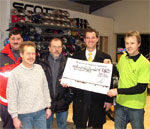 |
| Klaus Kastner (rechts im Bild) und Markus Philipp (daneben), Leiter der Sparkassen-Geschäftsstelle Kuppenheim, Reinhard Lehre von den Radsportfreunden Kuppenheim sowie Michael Reiter (Die Johanniter) überreichen Josef Luft (links) den 15. Spendenscheck. |
Klaus Kastners Idee macht Schule. Seit 15 Jahren veranstaltet
sein RadHaus
zusammen mit
terre des hommes Murgtal / Mittelbaden die beliebte Kuppenheimer
Fahrradbörse. Dies war auch die
Initialzündung für viele nachfolgenden Fahrradbörsen
im mittelbadischen
Raum.
Die Sparkasse Gaggenau-Kuppenheim, die seit rund
25 Jahren terre des hommes unterstützt,
ist bei jeder Fahrradbörse dabei, finanziert
die Werbung und rundet den Erlös (10 Prozent
der Verkaufspreise) großzügig auf,
dieses Jahr mit 500 Euro.
Durch diese Beispiel gebende Zusammenarbeit konnten
in den zurück liegenden 15 Jahren mehr als
18.500 Euro für Projekte von terre des hommes
zusammengetragen werden. „Mit dem diesjährigen
Betrag sind wir in der Lage, etwa 50.000 Schüler
im Schul- und Ernährungsprojekt LANDUSE
in Simbabwe (Ostafrika) zu finanzieren. Unterstützt
von 3.700 Lehrern in 56 Schulen pflanzen, ernten
und wässern sie mit der umweltschonenden
Permakultur-Methode Gemüse und Kräuter
und motivieren ihre Eltern und Nachbarn zum Mitmachen
. Dank der Kuppenheimer Initiative haben sie
wieder eine Zukunft“, so Heinz Wolf, Sprecher
von terre des hommes Murgtal / Mittelbaden.
„Von 233 angelieferten Fahrrädern wechselten
138 den Besitzer, das entspricht einer Verkaufsquote
von 60 Prozent. In vergangenen 15 Jahren konnten
somit nahezu 2.000 Gebraucht-Fahrräder einen
neuen Besitzer finden“, ergänzte Josef
Luft, neben Bärbel und Uli Thoma der Verantwortliche
für den organisatorischen Rahmen der Radbörse.
Zum Erfolg trugen wie jedes Jahr die Mitarbeiter
von terre des hommes, die „Radsportfreunde
Kuppenheim“, die umfangreiche technische
Beratung leisteten , sowie „Die Johanniter
Kuppenheim“ durch deren Bewirtung bei.
|
|
|
|
 Ansprechpartner Ansprechpartner
|
|
Wolfgang Deppisch
(Projektinfos)
Tel. 07222 / 32927
Heinz Wolf
(Sponsoring, Allgemeines)
Tel. 07225 / 75543
weitere Ansprechpartner
|
|
Erlöse
1992-2012
|
|

Jahr |
Euro |
1992 |
70.000 |
1993 |
75.600 |
1994 |
83.883 |
1995 |
69.617 |
1996 |
51.412 |
1997 |
61.749 |
1998 |
60.333 |
1999 |
68.742 |
2000 |
85.492 |
2001 |
106.375 |
2002 |
78.937 |
2003 |
84.027 |
2004 |
76.662 |
2005 |
149.941 |
2006 |
84.497 |
2007 |
105.958 |
2008 |
104.053 |
2009 |
100.833 |
2010 |
107.254 |
2011 |
103.600 |
| 2012 |
158.250 |
| 2013 |
163.420 |
1977-2013 |
mehr als 2,7 Mio. € |
|
Detailansicht der Erlöszahlen |
|
|


;)
;)
;)
;)
;)
;)
;)
;)
;)